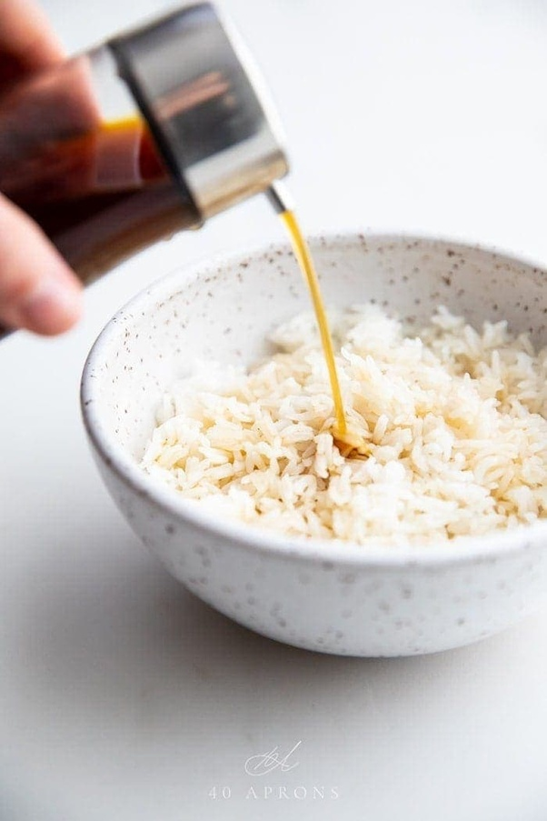

Rice and cheese

Description
This is a simple recipe coined by the one and only Deborah Baker
- Packet of microwave rice in a flavour of this choosing
- An obscene amount of soysauce
- Cubed mature cheddar cheese
Steps
- Heat rice in microwave for 1 minute 30 seconds
- Add the cubes of cheese
- Drown in soy sauce
- And serve